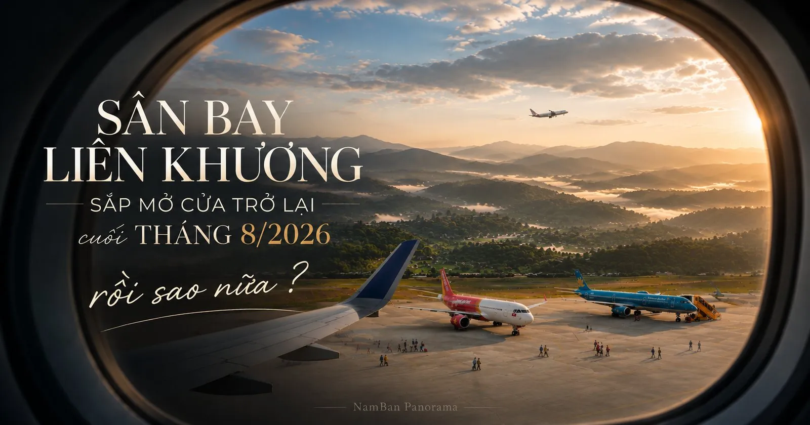
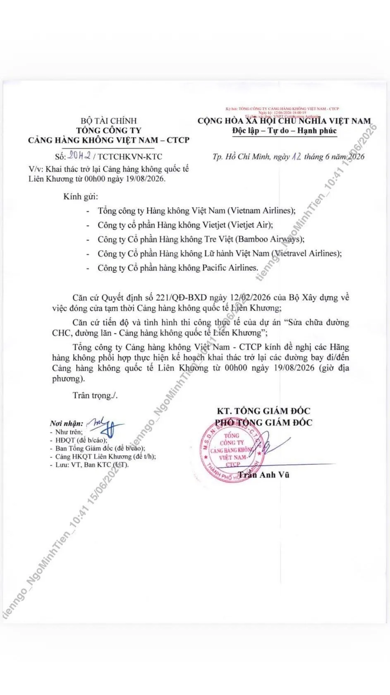

Theo văn bản của Tổng công ty Cảng hàng không Việt Nam ký ngày 12/6/2026, các đường bay đi và đến Liên Khương sẽ khai thác trở lại từ 00h00 ngày 19/8/2026, sau thời gian tạm đóng để sửa chữa đường cất hạ cánh và đường lăn. Vietnam Airlines, Vietjet, Bamboo, Vietravel, Pacific cùng nhận thông báo.
Sân bay Liên Khương khai thác trở lại từ 00h00 ngày 19/8/2026 (văn bản Tổng công ty Cảng hàng không Việt Nam ký 12/6/2026). Nam Ban cách sân bay khoảng 20km, đi 35–45 phút. Bay từ TP.HCM hoặc Hà Nội tới Liên Khương buổi sáng, tới Nam Ban trong ngày. Điều sân bay không làm: không có cơn sốt đất nào nổ ra vào sáng 19/8 — đất không đắt hơn vì một chuyến bay hạ cánh. Cái nó thật sự thay đổi là tần suất người ghé, không phải giá.
Một dòng thông báo ngắn. Nhưng đáng dừng lại lâu hơn một chút.
Với người ở xa, Liên Khương có thể chỉ là một cái tên trên vé máy bay. Nhưng với vùng cao nguyên này, nó là cửa ngõ gần nhất phục vụ cả tỉnh Lâm Đồng, nhất là Đà Lạt và vùng Lâm Hà. Nam Ban nằm gần sân bay Liên Khương.
Khi cửa ngõ đó đóng, mọi thứ xa thêm một chút. Khi nó mở lại, mọi thứ gần lại một chút.

Sẽ không có cơn sốt nào nổ ra vào sáng 19/8. Đất không tự nhiên đắt hơn vì một chuyến bay hạ cánh — ai nói với bạn điều ngược lại thì đáng để bạn lưu ý.
Nhưng có nhiều thứ nho nhỏ sẽ thay đổi. Một vài khoảng cách được rút ngắn. Một vài cuộc gặp gỡ trở nên dễ hơn. Một vài chuyến đi không còn phải trì hoãn vì không có lựa chọn. Một vài quyết định được đưa ra sớm hơn, đơn giản vì đường về đã thuận tiện trở lại.
Có người sẽ đến lần đầu, hạ cánh xuống Liên Khương, lên Đà Lạt bằng tuyến đèo Tà Nung và lần đầu nhìn thấy thung lũng Nam Ban mở ra. Có người sẽ quay lại sau một thời gian vì đường bay gián đoạn. Và có người chỉ vô tình đi ngang qua, rồi nhớ mãi một buổi sáng nào đó trên cao nguyên.
Người vui nhất có lẽ là những người vẫn đang chờ một lý do để quay lại cao nguyên.
Sân bay Liên Khương mở lại khi nào?
Từ 00h00 ngày 19/8/2026.
Sân bay nào gần Nam Ban nhất?
Liên Khương — gần hơn mọi sân bay khác.
Từ sân bay Liên Khương đi Nam Ban bao lâu?
Nam Ban cách sân bay Liên Khương khoảng 20km, đi 35–45 phút xe.
Sân bay mở lại có làm giá đất Nam Ban tăng không?
Không tự động. Sân bay tăng lượng người ghé, không tăng giá trực tiếp. Giá tăng quanh những thứ đang được làm thật, không phải quanh một tin.
Bay từ TP.HCM đến Đà Lạt mất bao lâu?
Chuyến bay chừng 50 phút. Từ sân bay Liên Khương về Nam Ban thêm 35–45 phút xe. Nghĩa là sáng bay, trưa đã có mặt — làm xong việc, chiều về lại thành phố nếu muốn.
Sân bay mở lại thì có nên mua đất Nam Ban ngay không?
Không có lý do gì để vội. Sân bay không tự làm giá đất tăng — nó tăng tần suất người ghé, không tăng giá. Ai bảo "sân bay mở, đất sắp sốt, mua ngay đi" là đang bán cho bạn một câu chuyện, không phải một mảnh đất. Giá tăng quanh những thứ đang được làm thật. Không phải quanh một tin.
Phần lớn người ta đọc tin này, gật đầu, ờ, rồi lướt qua. Một phần sẽ rất vui vì việc di chuyển không còn là chuyện của cả ngày đường nữa. Từ TP.HCM hay Hà Nội bay đến Liên Khương trong buổi sáng, đi 35-45 phút là tới Nam Ban, làm những việc cần làm, rồi về lại thành phố trong ngày nếu cần.
Những việc trước đây cứ để dành cho một ngày nào đó, có lẽ sẽ xảy ra sớm hơn.
Một sân bay mở lại không làm vùng đất này khác đi. Những ngọn đồi vẫn ở đó. Hoa cà phê vẫn nở trắng vào những ngày đầu năm.
Chỉ là đường về đã thuận tiện trở lại.